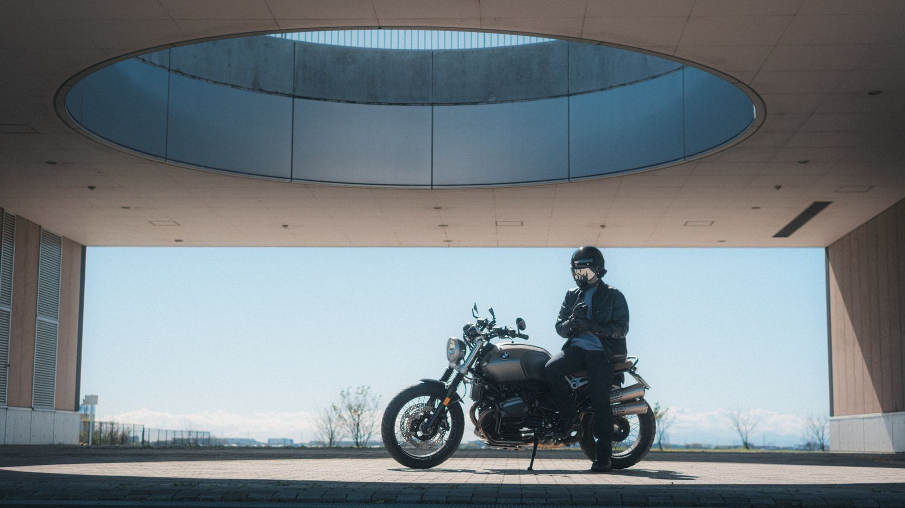

<!DOCTYPE html>
<html lang="ja">
<head>
<meta charset="utf-8">
<meta name="viewport" content="width=device-width,initial-scale=1">
<title>ゆう太郎【motoblog】媒体資料</title>
<link rel="preconnect" href="https://fonts.googleapis.com">
<link rel="preconnect" href="https://fonts.gstatic.com" crossorigin>
<link rel="stylesheet" href="https://fonts.googleapis.com/css2?family=Shippori+Mincho+B1:wght@600;800&family=Zen+Kaku+Gothic+New:wght@400;500;700&family=Cormorant+Garamond:ital,wght@0,500;0,600;1,500&family=IBM+Plex+Mono:wght@400;500&display=swap">
<style>
:root{
  --bg:#F3EFE6; --paper:#FAF7F1; --ink:#1B1C18; --muted:#6E6B60; --line:#DDD6C8;
  --olive:#3F4A2A; --olive2:#5C6B3C; --olive-soft:#E4E5D6; --brown:#8A5530; --brown-soft:#F0E3D5; --cream:#EFE6D2;
  --f-display:"Shippori Mincho B1","Hiragino Mincho ProN","Yu Mincho",serif;
  --f-en:"Cormorant Garamond","Times New Roman",serif;
  --f-body:"Zen Kaku Gothic New","Hiragino Sans","Yu Gothic",system-ui,sans-serif;
  --f-mono:"IBM Plex Mono",ui-monospace,Menlo,monospace;
}
*{box-sizing:border-box}
html{scroll-behavior:smooth}
body{margin:0;background:var(--bg);color:var(--ink);font-family:var(--f-body);font-size:15px;line-height:1.75;-webkit-font-smoothing:antialiased}
a{color:inherit}
.page{max-width:820px;margin:0 auto;background:var(--paper);box-shadow:0 0 0 1px var(--line)}
/* hero */
.hero{color:#F6F1E6;background:#1E2018}
.hero img{display:block;width:100%;aspect-ratio:16/9;object-fit:cover;object-position:center 60%}
.hero .in{padding:24px 26px 26px}
.mk{font-family:var(--f-en);font-style:italic;font-size:15px;letter-spacing:.12em;opacity:.85}
.hero h1 span{display:inline-block}
.hero h1{font-family:var(--f-display);font-weight:800;font-size:clamp(25px,5.6vw,38px);line-height:1.38;margin:8px 0 10px;letter-spacing:.02em}
.hero .who{font-size:14px;opacity:.92;display:flex;flex-wrap:wrap;gap:4px 14px;align-items:baseline}
.hero .who b{font-family:var(--f-display);font-size:19px;letter-spacing:.04em}
.bio{margin:8px 0 0;font-size:13px;opacity:.85;line-height:1.7}
.cta{display:inline-flex;align-items:center;gap:8px;margin-top:16px;background:#F6F1E6;color:var(--ink);text-decoration:none;font-weight:700;font-size:14px;padding:10px 18px;border-radius:999px}
/* strip */
.strip{display:grid;grid-template-columns:repeat(2,minmax(0,1fr));background:var(--olive);color:#EEF0E3}
@media(min-width:640px){.strip{grid-template-columns:repeat(4,minmax(0,1fr))}}
.strip div{padding:16px 18px;border-right:1px solid rgba(255,255,255,.12);border-bottom:1px solid rgba(255,255,255,.12);min-width:0}
.strip span{display:block;font-size:11px;letter-spacing:.12em;opacity:.75;font-weight:700}
.strip b{display:block;font-family:var(--f-display);font-weight:800;font-size:clamp(22px,5vw,28px);line-height:1.25}
.strip b small{font-size:12px;margin-left:2px;font-weight:600}
.strip .up b{color:#F3D9A6}
.strip em{display:block;font-style:normal;font-size:11px;opacity:.7;line-height:1.4}
.body{padding:8px 26px 34px}
section{padding-top:36px}
.sh{display:flex;align-items:baseline;gap:12px;margin-bottom:14px;border-bottom:1px solid var(--ink);padding-bottom:8px}
.sh .no{font-family:var(--f-en);font-style:italic;font-size:15px;color:var(--brown);letter-spacing:.06em;white-space:nowrap}
.sh h2{font-family:var(--f-display);font-weight:800;font-size:20px;margin:0;line-height:1.4}
.sh small{margin-left:auto;font-size:11px;color:var(--muted);text-align:right}
.sh{flex-wrap:wrap}
.nb{display:inline-block}
@media(max-width:639px){.sh small{margin-left:0;width:100%;text-align:left}.sh small br{display:none}.sh h2{font-size:19px}td.d{font-size:11px}th,td{padding:9px 4px}}
.lead{font-family:var(--f-display);font-weight:600;font-size:17px;line-height:1.7;margin:0 0 14px}
.lead b{color:var(--brown)}
/* who */
.aud{display:grid;grid-template-columns:1fr;gap:20px;align-items:center}
@media(min-width:640px){.aud{grid-template-columns:.9fr 1.4fr}}
.big{font-family:var(--f-display);font-weight:800;font-size:56px;line-height:1;color:var(--brown)}
.big small{font-size:18px}
.big.y{color:var(--olive2);font-size:44px}
.segs{display:flex;gap:26px;align-items:flex-end}
.sl{margin:6px 0 0;font-size:13px;color:var(--muted)}
.bars{display:flex;flex-direction:column;gap:8px}
.bar{display:grid;grid-template-columns:70px minmax(0,1fr) 48px;gap:10px;align-items:center;font-size:13px}
.bar em{font-style:normal;color:var(--muted);white-space:nowrap}
.bar .t{height:10px;background:var(--line);border-radius:5px;overflow:hidden}
.bar .t i{display:block;height:100%;background:#B9B5A8;border-radius:5px}
.bar .t i.hi{background:var(--brown)}
.bar .t i.y{background:var(--olive2)}
.bar b.hi{color:var(--brown);font-weight:700}
.bar b.y{color:var(--olive2);font-weight:700}
.bar b{color:var(--muted)}
.bar b{font-family:var(--f-mono);font-weight:500;text-align:right;font-size:12px}
/* why */
.why{display:grid;grid-template-columns:1fr;gap:12px}
@media(min-width:640px){.why{grid-template-columns:repeat(3,minmax(0,1fr))}}
.wc{background:var(--cream);padding:16px 16px 14px;border-radius:2px;min-width:0}
.wc .k{font-family:var(--f-en);font-style:italic;color:var(--brown);font-size:14px}
.wc h3{font-family:var(--f-display);font-size:17px;margin:2px 0 6px;line-height:1.4}
.wc p{margin:0;font-size:13px;color:#3d3e37;line-height:1.7}
/* voices */
.voices{display:grid;grid-template-columns:1fr;gap:10px}
@media(min-width:640px){.voices{grid-template-columns:repeat(2,minmax(0,1fr))}}
.vc{border-left:3px solid var(--brown);background:#fff9;padding:12px 14px;margin:0}
.vc p{margin:0;font-family:var(--f-display);font-weight:600;font-size:15px;line-height:1.65}
.vc cite{display:block;font-style:normal;font-size:11px;color:var(--muted);margin-top:6px}
/* works */
table{width:100%;border-collapse:collapse;font-size:14px}
th,td{padding:10px 6px;border-bottom:1px solid var(--line);text-align:left;vertical-align:top}
th{font-size:11px;color:var(--muted);font-weight:700;letter-spacing:.06em}
td.r,th.r{text-align:right;white-space:nowrap;font-family:var(--f-mono)}
td.d{white-space:nowrap;font-family:var(--f-mono);font-size:12px;color:var(--muted)}
td .cat{display:inline-block;font-size:10px;font-weight:700;color:var(--olive);border:1px solid var(--olive2);padding:0 6px;border-radius:2px;margin-right:6px;vertical-align:1px}
td a{text-decoration:none;border-bottom:1px solid var(--line)}
/* menu */
.menu{display:grid;grid-template-columns:1fr;gap:10px}
@media(min-width:640px){.menu{grid-template-columns:repeat(2,minmax(0,1fr))}}
.mi{border:1px solid var(--line);padding:14px 16px;border-radius:2px;background:#fff8;display:grid;grid-template-columns:30px minmax(0,1fr);gap:8px}
.mi .n{font-family:var(--f-en);font-style:italic;font-size:20px;color:var(--brown);line-height:1.2}
.mi b{display:block;font-size:15px}
.mi span{font-size:13px;color:var(--muted);line-height:1.6}
/* flow */
.flow{display:grid;grid-template-columns:1fr;gap:0;counter-reset:f}
@media(min-width:640px){.flow{grid-template-columns:repeat(4,minmax(0,1fr))}}
.fl{padding:12px 14px;border-top:2px solid var(--olive);min-width:0}
.fl .s{font-family:var(--f-en);font-style:italic;color:var(--olive2);font-size:13px}
.fl b{display:block;font-size:14px;line-height:1.5}
.fl span{font-size:12px;color:var(--muted);line-height:1.6;display:block;margin-top:2px}
.honest{margin-top:12px;border:1px dashed var(--brown);padding:12px 14px;border-radius:2px}
.honest b{font-size:13px;color:var(--brown)}
.honest p{margin:4px 0 0;font-size:13px;line-height:1.75}
.cases{display:grid;grid-template-columns:1fr;gap:10px;margin-bottom:18px}
@media(min-width:640px){.cases{grid-template-columns:repeat(3,minmax(0,1fr))}}
.case{background:var(--ink);color:#EFE9DC;padding:14px 16px;border-radius:2px;min-width:0}
.case .ck{font-family:var(--f-en);font-style:italic;font-size:13px;color:#CDBF9F}
.case .cb b{font-family:var(--f-display);font-size:30px;font-weight:800;line-height:1.2;color:#F3D9A6}
.case .cb b small{font-size:13px;margin-left:2px}
.case .cb em{font-style:normal;font-size:11px;opacity:.7;margin-left:6px}
.case .ct{display:block;font-weight:700;font-size:14px;margin-top:4px;text-decoration:none;color:#F6F1E6}
.case p{margin:4px 0 0;font-size:12px;opacity:.85;line-height:1.7}
tr.sep td{font-size:11px;font-weight:700;color:var(--muted);padding-top:16px;letter-spacing:.04em}
tr.old td{opacity:.72}
.tl{font-size:12px;color:var(--muted);font-weight:700;margin:0 0 4px}
.mid{text-align:center;margin:18px 0 0}
.cta2{display:inline-block;background:var(--ink);color:#F6F1E6;text-decoration:none;font-weight:700;font-size:14px;padding:12px 26px;border-radius:999px}
.terms{margin-top:14px;background:var(--olive-soft);padding:14px 16px;border-radius:2px}
.terms b{font-size:13px;color:var(--olive)}
.terms ul{margin:6px 0 0;padding-left:1.2em;font-size:13px;line-height:1.8}
.photos{display:flex;gap:6px;align-items:flex-start}
.photos .col{flex:1;min-width:0;display:flex;flex-direction:column;gap:6px}
.photos img{width:100%;height:auto;display:block}
/* contact */
.contact{background:var(--ink);color:#F1ECE0;padding:26px 26px 30px}
.contact .mk{color:#CDBF9F}
.contact h2{font-family:var(--f-display);font-weight:800;font-size:22px;margin:4px 0 6px}
.contact p{margin:0 0 14px;font-size:13px;opacity:.8}
.crow{display:flex;gap:10px;flex-wrap:wrap;align-items:baseline;padding:8px 0;border-top:1px solid rgba(255,255,255,.12)}
.crow span{font-size:11px;letter-spacing:.12em;opacity:.65;min-width:80px}
.crow a,.crow b{font-weight:700;word-break:break-all;color:#F6F1E6}
.crow em{font-style:normal;font-size:12px;opacity:.7}
.copy{border:1px solid rgba(255,255,255,.5);background:transparent;color:#F6F1E6;font:inherit;font-size:12px;padding:2px 10px;border-radius:999px;cursor:pointer}
.foot{font-size:11px;color:var(--muted);text-align:center;padding:14px 18px 30px}
</style>
</head>
<body>
<div class="page" id="kit"></div>
<p class="foot" id="foot"></p>

<!--KIT-DATA-START-->
<script type="application/json" id="kit-data">{"updated":"2026-11-01","subs":878,"totalViews":289179,"videos":72,"month":"2026-10","monthLong":26575,"avgViews":4509,"medViews":2580,"avgN":15,"avgSince":"2026-04-11","audience":{"period":"2026年8〜10月","male":99.7,"ages":[["18〜24歳",1.9],["25〜34歳",13.4],["35〜44歳",14.5],["45〜54歳",31.1],["55〜64歳",32.8],["65歳〜",6.5]]},"reviews":[{"cat":"装備","title":"TT&CO トゥーカッター（ヘルメット）1年レビュー","id":"afT4R7_UEqA","views":4717,"comments":17,"date":"2026-10-24"},{"cat":"長期レビュー","title":"R nineT Scrambler 半年レビュー","id":"KFkw1gNCpBE","views":10880,"comments":35,"date":"2026-10-17"},{"cat":"維持費・実測","title":"R nineT 消耗品交換費用と油温","id":"cWQr-VbBq2I","views":13091,"comments":62,"date":"2026-07-11"},{"cat":"DIY取付","title":"R nineT バーエンドミラー取り付け（デイトナ／ハイサイダー）","id":"fAIjmcr54is","views":2259,"comments":6,"date":"2026-04-18"}],"instagram":{"handle":"yutaro_motoblog","followers":null},"contact":"motoblog.yutaro@gmail.com","photos":[{"src":"img/g10.jpg","w":1100,"h":731},{"src":"img/g11.jpg","w":1100,"h":731},{"src":"img/g7.jpg","w":1100,"h":688},{"src":"img/g4.jpg","w":1100,"h":1654},{"src":"img/g1.jpg","w":1100,"h":550},{"src":"img/g2.jpg","w":1100,"h":619},{"src":"img/g8.jpg","w":1100,"h":688},{"src":"img/g3.jpg","w":1100,"h":733},{"src":"img/g5.jpg","w":1100,"h":688},{"src":"img/g9.jpg","w":1100,"h":1650},{"src":"img/g6.jpg","w":1100,"h":688}],"x":{"handle":"yutaroMotoBlog","followers":333},"voices":[{"text":"元GB350乗りの方視点でのレビューはめちゃくちゃ参考になります！","from":"R nineT 半年レビュー ／ 購入を検討中の視聴者"},{"text":"実情がわかってとても良かったです。お金貯めてしっかりと計画します","from":"消耗品交換費用と油温 ／ 購入を検討中の視聴者"}],"growth":{"period":"2026年8〜10月","net":188,"prevNet":89},"cases":[{"kind":"fast","label":"新作の初速","id":"KFkw1gNCpBE","title":"R nineT Scrambler 半年レビュー（2026年10月公開）","views":10708,"span":"公開2週間","note":"公開から2週間で1万回を超え、登録者も31人増えました。"},{"kind":"talk","label":"会話が生まれる","id":"cWQr-VbBq2I","title":"R nineT 消耗品交換費用と油温（2026年7月公開）","views":13091,"comments":62,"note":"コメント欄で、オーナー同士が費用や対策を教え合う場になりました。"},{"kind":"long","label":"長く見られる","id":"kSpsqRne-Qk","title":"R nineT Scrambler 納車（2026年4月公開）","views":8183,"recent28":851,"note":"公開から半年たった今も見られ続け、8,000回を超えています。"}]}</script>
<!--KIT-DATA-END-->

<script>
(function(){
var D;try{D=JSON.parse(document.getElementById("kit-data").textContent)}catch(e){D={}}
function esc(s){return String(s==null?"":s).replace(/[&<>"']/g,function(c){return {"&":"&amp;","<":"&lt;",">":"&gt;",'"':"&quot;","'":"&#39;"}[c]})}
function n(v){return v==null?"–":Number(v).toLocaleString()}
function man(v){if(v==null)return "–";return v>=10000?(Math.round(v/1000)/10)+'<small>万</small>':Number(v).toLocaleString()}
function ymd(s){if(!s)return "";var p=s.split("-");return (+p[0])+"年"+(+p[1])+"月"+(p[2]?(+p[2])+"日":"")}
var a=D.audience||{},ages=a.ages||[],maxA=Math.max.apply(null,ages.map(function(x){return x[1]}).concat([1]));
var core=0,young=0;ages.forEach(function(x){if(/^(45|55)/.test(x[0]))core+=x[1];if(/^(25|35)/.test(x[0]))young+=x[1]});core=Math.round(core*10)/10;young=Math.round(young*10)/10;
var ig=D.instagram||{},xx=D.x||{};
function casesHTML(){var c=D.cases||[];if(!c.length)return "";return '<div class="cases">'+c.map(function(x,i){
  var big=x.kind==="long"?'<b>'+n(x.recent28)+'<small>回</small></b><em>直近28日の再生</em>':x.kind==="talk"?'<b>'+n(x.comments)+'<small>件</small></b><em>コメント</em>':'<b>'+man(x.views)+'<small>回</small></b><em>'+esc(x.span||"")+'</em>';
  return '<div class="case"><div class="ck">Case 0'+(i+1)+' — '+esc(x.label)+'</div><div class="cb">'+big+'</div><a class="ct" href="https://youtu.be/'+esc(x.id)+'">'+esc(x.title)+'</a><p>'+esc(x.note)+'</p></div>'}).join("")+'</div>'}
var cs=(D.reviews||[]).filter(function(r){return typeof r.comments==="number"}),avgC=cs.length>=3?Math.round(cs.reduce(function(s,r){return s+r.comments},0)/cs.length):null;
var h='';
/* hero */
h+='<header class="hero"><div class="in">';
h+='<div class="mk">Media Kit — YouTube Motovlog</div>';
h+='<h1><span>装備を自分で選ぶ</span><span>大人のライダーに、</span><br><span>“本音”で</span><span>届けます。</span></h1>';
h+='<div class="who"><b>ゆう太郎【motoblog】</b><span>BMW R nineT Scrambler ／ FUJIFILM X-T5 ／ 埼玉</span></div>';
h+='<p class="bio">30代・会社員。GB350に2年半乗り、2026年からR nineT Scrambler。休日は近場から遠方までツーリングに出かけ、写真を撮っています。</p>';
h+='<a class="cta" href="#contact">お仕事のご相談はこちら</a>';
h+='</div></header>';
/* strip */
h+='<div class="strip">';
h+='<div><span>YOUTUBE 登録者</span><b>'+n(D.subs)+'<small>人</small></b></div>';
h+='<div><span>1本の平均再生</span><b>'+man(D.avgViews)+'<small>回</small></b><em>横動画・'+(D.avgSince?ymd(D.avgSince).replace(/\d+日$/,""):"")+'以降</em></div>';
var gr=D.growth||{};
if(gr.net!=null)h+='<div class="up"><span>直近3か月の登録者</span><b>+'+n(gr.net)+'<small>人</small></b><em>'+(gr.prevNet>0&&gr.net/gr.prevNet>=1.1?'前の3か月の'+(Math.round(gr.net/gr.prevNet*10)/10)+'倍':(gr.prevNet!=null?'前の3か月は+'+n(gr.prevNet)+'人':esc(gr.period||"")))+'</em></div>';
else h+='<div><span>'+(D.month?(+D.month.slice(5))+'月の再生':'月間再生')+'</span><b>'+man(D.monthLong)+'<small>回</small></b><em>横動画</em></div>';
h+='<div><span>男性の視聴者</span><b>'+(a.male!=null?a.male:"–")+'<small>%</small></b><em>'+esc(a.period||"")+'</em></div>';
h+='</div>';
h+='<div class="body">';
/* 01 who */
h+='<section><div class="sh"><span class="no">01 — Audience</span><h2><span class="nb">45〜64歳を中心に、</span><span class="nb">大人の男性ライダーが</span><span class="nb">見ています</span></h2><small>'+esc(a.period||"")+'・YouTube アナリティクス</small></div>';
h+='<p class="lead">中心は<b>45〜64歳</b>、さらに<b>25〜44歳の同世代</b>も約3割。視聴者のほぼ全員が男性です。</p>';
h+='<div class="aud"><div><div class="segs"><div><div class="big">'+core+'<small>%</small></div><p class="sl">45〜64歳</p></div><div><div class="big y">'+young+'<small>%</small></div><p class="sl">25〜44歳</p></div></div></div>';
h+='<div class="bars">'+ages.map(function(x){var g=/^(45|55)/.test(x[0])?"hi":/^(25|35)/.test(x[0])?"y":"";return '<div class="bar"><em>'+esc(x[0])+'</em><div class="t"><i class="'+g+'" style="width:'+(x[1]/maxA*100).toFixed(1)+'%"></i></div><b class="'+g+'">'+x[1]+'%</b></div>'}).join("")+'</div></div></section>';
/* 04 works */
h+='<section><div class="sh"><span class="no">02 — Works</span><h2><span class="nb">R nineTのレビューは、</span><span class="nb">公開2週間で</span><span class="nb">1万回見られました</span></h2><small>再生回数は'+ymd(D.updated)+'時点</small></div>'+casesHTML()+'<p class="tl">レビュー・紹介の動画（新しい順）</p><table><thead><tr><th>公開</th><th>動画</th><th class="r">再生</th><th class="r">コメント</th></tr></thead><tbody>';
var rv=(D.reviews||[]).slice().sort(function(a,b){return String(b.date||"").localeCompare(String(a.date||""))}),isOld=function(r){return /GB350/.test(r.title)},rows=rv.filter(function(r){return !isOld(r)}).concat(rv.filter(isOld));var sep=false;rows.forEach(function(r){if(isOld(r)&&!sep){sep=true;h+='<tr class="sep"><td colspan="4">前の愛車 GB350 の動画</td></tr>'}h+='<tr'+(isOld(r)?' class="old"':'')+'><td class="d">'+(r.date?r.date.slice(0,7).replace("-","/"):"")+'</td><td><span class="cat">'+esc(r.cat)+'</span><a href="https://youtu.be/'+esc(r.id)+'">'+esc(r.title)+'</a></td><td class="r">'+n(r.views)+'</td><td class="r">'+(r.comments==null?"–":n(r.comments))+'</td></tr>'});
h+='</tbody></table><div class="honest"><b>正直にお伝えすること</b><p>登録者はまだ1,000人に届いていない、小さなチャンネルです。その代わり1本ずつ時間をかけて作り、長く見られる動画にしています。前の愛車GB350の取り付け動画は、公開から2年以上たった今も見られ続け、3.5万回を超えています。</p></div></section>';
/* gallery */
if(D.photos&&D.photos.length){h+='<section><div class="sh"><span class="no">03 — Gallery</span><h2><span class="nb">バイクと装備が映える写真を、</span><span class="nb">撮ってお渡しできます</span></h2><small>作例・FUJIFILM X-T5 で撮影</small></div><div class="photos" id="photos"></div></section>'}
/* 03 voices */
if(D.voices&&D.voices.length){h+='<section><div class="sh"><span class="no">04 — Voices</span><h2>購入を考えている人に届いています</h2><small>YouTubeのコメントより</small></div><div class="voices">'+D.voices.map(function(v){return '<blockquote class="vc"><p>「'+esc(v.text)+'」</p><cite>'+esc(v.from)+'</cite></blockquote>'}).join("")+'</div></section>'}
/* 05 menu */
h+='<section><div class="sh"><span class="no">05 — Menu</span><h2>動画・写真・SNSでご紹介できます</h2></div><div class="menu">';
h+='<div class="mi"><span class="n">i</span><div><b>長期使用レビュー動画</b><span>しっかり使ってから、良い点・気になる点を正直にお伝えします</span></div></div>';
h+='<div class="mi"><span class="n">ii</span><div><b>取り付け・使い方の動画</b><span>DIYでの取り付けを、工具・手順・かかった時間まで丁寧に</span></div></div>';
h+='<div class="mi"><span class="n">iii</span><div><b>着用・使用写真の撮影</b><span>R nineTと合わせた、クラシックな雰囲気の写真をお渡しできます</span></div></div>';
h+='<div class="mi"><span class="n">iv</span><div><b>X・Instagramでの写真投稿</b><span>撮影した写真と一緒に、SNSでもご紹介します</span></div></div>';
h+='</div><div class="terms"><b>ご依頼の条件</b><ul><li>商品のご提供のみでも、お気軽にご相談ください。</li><li>使用期間と公開時期は、商品に合わせてご相談のうえ決めさせていただきます。</li><li>撮影した写真は、貴社のWebサイトやSNSでもお使いいただけます。</li><li>公開前に動画をお送りしますので、商品名や仕様など事実関係のご確認をお願いいたします。感想は使ってみたうえでの率直な内容でお伝えします。</li><li>有償でのご依頼の場合、費用はご依頼内容をうかがったうえで、ご相談して決めさせていただきます。</li></ul></div><p class="mid"><a class="cta2" href="#contact">お仕事のご相談はこちら</a></p></section>';
/* 06 flow */
h+='<section><div class="sh"><span class="no">06 — Flow</span><h2><span class="nb">4ステップで、</span><span class="nb">公開後の反応まで</span><span class="nb">お伝えします</span></h2></div><div class="flow">';
h+='<div class="fl"><span class="s">Step 1</span><b>メールでご相談</b><span>商品と、ご希望の公開時期をお知らせください</span></div>';
h+='<div class="fl"><span class="s">Step 2</span><b>実際に使う</b><span>ツーリングや普段使いで、じっくり試します</span></div>';
h+='<div class="fl"><span class="s">Step 3</span><b>動画・写真を公開</b><span>事実関係をご確認いただいたうえで、「PR」を表示して公開します</span></div>';
h+='<div class="fl"><span class="s">Step 4</span><b>結果のご報告</b><span>再生数・コメントなど、公開後の反応をお伝えします</span></div>';
h+='</div></section>';
h+='</div>';
/* contact */
h+='<footer class="contact" id="contact"><div class="mk">Contact</div><h2>まずは、お気軽にご相談ください</h2><p>商品のご提供・撮影・レビューのご依頼をお待ちしています。3日以内を目安にご返信いたします。</p>';
h+='<div class="crow"><span>メール</span><b>'+esc(D.contact||"")+'</b><button class="copy" id="cp" type="button">コピー</button></div>';
h+='<div class="crow"><span>YouTube</span><a href="https://www.youtube.com/@motoblog-yutaro">@motoblog-yutaro</a></div>';
if(xx.handle)h+='<div class="crow"><span>X</span><a href="https://x.com/'+esc(xx.handle)+'">@'+esc(xx.handle)+'</a></div>';
if(ig.handle)h+='<div class="crow"><span>Instagram</span><a href="https://www.instagram.com/'+esc(ig.handle)+'/">@'+esc(ig.handle)+'</a></div>';
h+='</footer>';
document.getElementById("kit").innerHTML=h;
function lay(){var box=document.getElementById("photos");if(!box)return;var n=window.innerWidth>=640?3:2;if(box.dataset.n==String(n))return;box.dataset.n=n;
  var cols=[],hs=[];box.innerHTML="";for(var i=0;i<n;i++){var c=document.createElement("div");c.className="col";box.appendChild(c);cols.push(c);hs.push(0)}
  D.photos.forEach(function(p){var src=typeof p==="string"?p:p.src,w=p.w||3,ht=p.h||2,k=hs.indexOf(Math.min.apply(null,hs));
    var im=document.createElement("img");im.src=src;im.width=w;im.height=ht;im.alt="R nineT Scrambler の作例写真";im.style.aspectRatio=w+"/"+ht;cols[k].appendChild(im);hs[k]+=ht/w})}
lay();window.addEventListener("resize",lay);
document.getElementById("foot").textContent="数字はYouTube アナリティクスの値で、毎月1日に自動で更新されます（最終更新 "+ymd(D.updated)+"）";
var cp=document.getElementById("cp");if(cp)cp.onclick=function(){var t=D.contact||"";try{navigator.clipboard.writeText(t).then(function(){cp.textContent="コピーしました"},function(){cp.textContent="長押しでコピー"})}catch(e){cp.textContent="長押しでコピー"}};
})();
</script>
</body>
</html>
